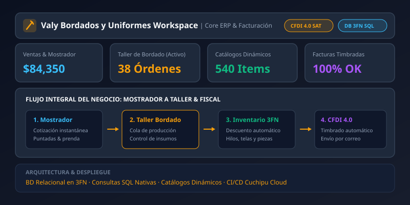

Sobre el Proyecto
Valy Bordados y Uniformes requería una plataforma integral que erradicara los desfases entre las ventas pactadas en el mostrador de atención al público y las órdenes en ejecución dentro del taller de confección y bordado. La solución debía soportar cálculos complejos de costos según número de puntadas, control minucioso de stock de insumos textiles y timbrado fiscal inmediato para empresas que requieren comprobantes CFDI 4.0.
Con Valy Workspace, Cuchipu Cloud diseñó una solución centralizada donde cada venta aprobada genera automáticamente su orden de taller, descuenta materiales en la base de datos normalizada y emite la factura electrónica sin pasos redundantes.
Funcionalidades Principales
El sistema cubre todos los eslabones operativos y financieros del negocio:
🧮 Cotizador Inteligente en Mostrador
Cálculo de presupuestos en segundos con base en densidad de puntadas, colores de hilo, tipo de prenda base y volumen del pedido.
🏭 Control de Taller y Producción
Monitoreo del estatus de órdenes de bordado asignadas a máquinas bordadoras industriales, avances de taller y fechas de entrega.
📦 Inventario Normalizado (3FN)
Descuento automático de materia prima (hilos, bobinas, entretelas, prendas por talla y color) sincronizado en tiempo real.
🧾 Facturación CFDI 4.0 (SAT)
Timbrado fiscal instantáneo con catálogos actualizados del SAT, generación y envío automático de XML y representación impresa en PDF.
👥 Cartera de Clientes & Anticipos
Registro de órdenes corporativas, control de anticipos (50%/50%), liquidaciones de pedidos y cuentas por cobrar organizadas.
📈 Analítica y Balances de Ventas
Métricas de margen por prenda, prendas más demandadas en el mes, insumos críticos y balances de caja en tiempo real.
Especificaciones Técnicas
La arquitectura fue diseñada para ofrecer máxima consistencia de datos, evitando cualquier pérdida de stock o duplicidad fiscal:
-
Base de Datos Relacional en 3FN (Tercera Forma Normal): Modelado estricto que elimina anomalías de actualización y redundancia en prendas compuestas, variantes de tallas e insumos de producción.
-
Consultas SQL Nativas Optimizadas: Búsquedas indexadas y consultas complejas en SQL puro para responder a cotizaciones y reportes de producción con velocidad récord.
-
Catálogos Dinámicos Parametrizables: Estructura flexible que permite al personal de mostrador dar de alta nuevas marcas, proveedores, colores de hilo o tipos de prendas sin requerir cambios de código.
-
Infraestructura y Despliegues Cuchipu Cloud: Monitoreo activo, backups programados de la base de datos y despliegue automatizado gestionado por nuestra agencia.
